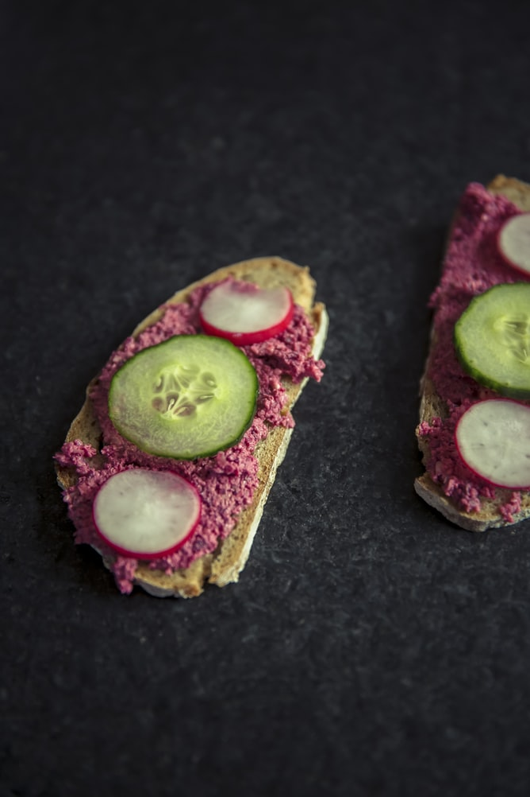

This is absolutely unique and beautiful way of making a healthy, I would say super snack made by Beet Greens. In Georgia and we have all kinds of snacks and dishes made of greens you would never consider as something to pay attention to. Beet Greens spread
or as we call it - "Pkhali" is made within minutes...

☆ Snack - "Pkhali", Beet Greens.
Ingredients
2 pounds of beef greens
1/2 pounds of walnuts
2 medium onions
2 cloves of garlic
Half a cup of parsley
Half a cup of coriander
Salt for taste
1/2 tsp of black pepper
1 tbsp of Vinegar
Pormegranate for decoration
Instructions
Whash beet greens and boil till it's nice and soft.
Chop greens when they are cooled down.
Grind together the walnuts, salt, pepper and garlic in a food processor.
Transfer all to a bowl, add vinegar and some water till it's a paste consistency . Mix finely chopped onion, parsley and mix well.
Add beet greens and mix well with hands. Make small balls and put a few pomegranate seeds on top .
Ready to searve . Enjoy !!!
☆ The Author - Lana Gasparyan.
Lana Gasparyan is creator and author graduated from Culinary Institute of America in Hyde Park in 2010. Total experience 10 year. Lana is originally from Georgia . Follow us on Instagram , Facebook and Twitter.